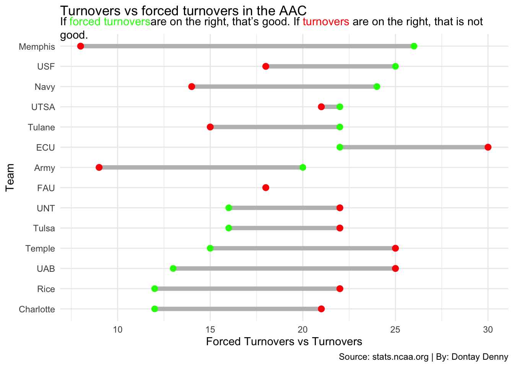
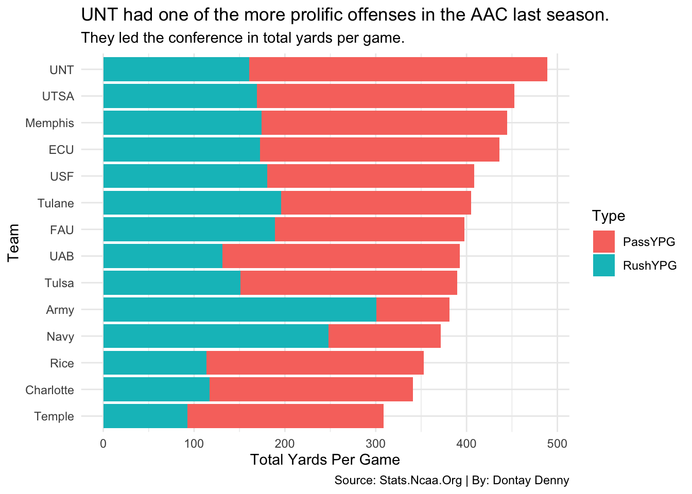
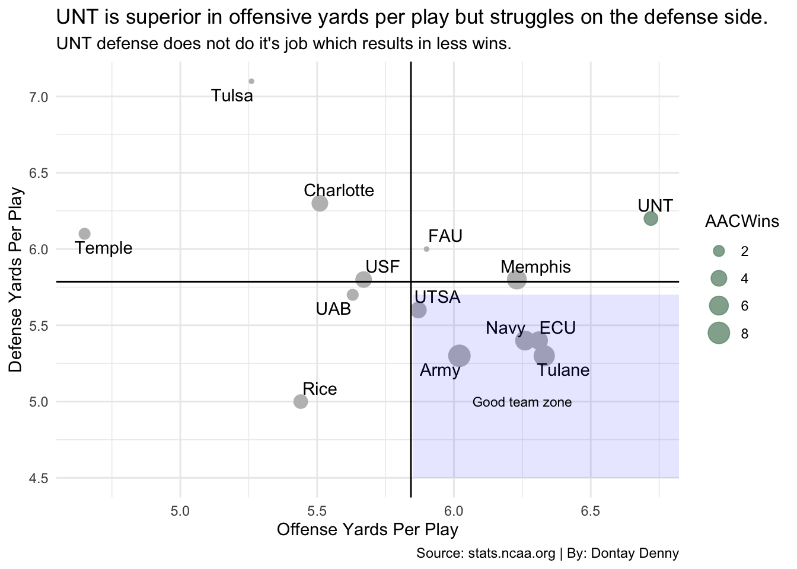
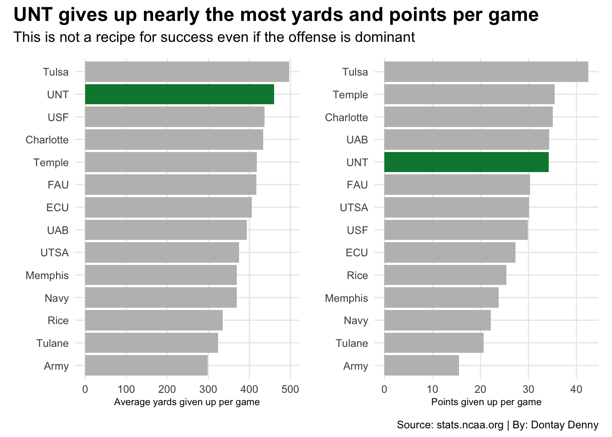

Code
library(tidyverse)
library(ggalt)
library(gt)
library(ggbeeswarm)
library(ggrepel)
library(ggtext)
library(patchwork)Dontay Denny
May 4, 2025
The North Texas football team has never been one of the best teams in their conference, despite which conference they were playing in. This past college football season, UNT had completed just their second season playing in the American Athletic Conference(AAC) and despite many people expecting them to take a massive tumble, UNT has held their own and stayed around .500 or 11-14 overall in the two seasons playing in the AAC.
UNT fans have desperately been waiting on an exciting product to be put on the gridiron to match the level of their basketball team. The North Texas football team has not had a winning season since the Mason Fine days in 2018 when quarterback Mason Fine was able to lead the Mean Green to back to back nine win seasons.
The first thing that we are going to look at for UNT is how the compared to the rest of the AAC in terms of how much they turned the ball over and how many turnovers that they forced over the course of the entire season.
ggplot() +
geom_dumbbell(
data = CFBAAC,
aes(y=reorder(Team, ForcedTO), x=ForcedTO, xend = TO),
size = 2,
colour = "grey",
colour_x = "green",
colour_xend = "red") +
labs(
title = "Turnovers vs forced turnovers in the AAC",
subtitle = "If <span style = 'color:green;'>forced turnovers</span>are on the right, that's good. If <span style = 'color:red;'>turnovers</span> are on the right, that is not good.", caption = "Source: stats.ncaa.org | By: Dontay Denny", x = "Forced Turnovers vs Turnovers", y = "Team"
) +
theme_minimal() +
theme(
plot.subtitle = element_textbox_simple()
) Warning: Using the `size` aesthetic with geom_segment was deprecated in ggplot2 3.4.0.
ℹ Please use the `linewidth` aesthetic instead.
As you can tell from the dumbbell chart, North Texas struggles in the American Athletic Conference in terms of turnover margin. The chart shows that North Texas turned the ball over a significant more amount of times than they were able to force a turnover.
The next chart that we will look at to compare UNT to the rest of the AAC is a stacked bar chart that will help compare and show how UNT stacked up amongst the conference in rushing, passing and total yards per game on the season.
cfb <- AACStats |>
group_by(Team,RushYPG, PassYPG)
cfblonger <- cfb |>
pivot_longer(
cols = ends_with("YPG"),
names_to = "Type",
values_to = "Yards"
)
ggplot() +
geom_bar(data = cfblonger, aes(x=reorder(Team,Yards), weight = Yards, fill = Type)) +
coord_flip() +
labs(x= "Team", y= "Total Yards Per Game", title = "UNT had one of the more prolific offenses in the AAC last season.", subtitle = "They led the conference in total yards per game.", caption = "Source: Stats.Ncaa.Org | By: Dontay Denny" ) +
theme_minimal()
As you can see from this chart, offense was not the issue at North Texas. Their offense seamlessly moved the ball on everyone they played despite finishing the season with a 6-7 record on the year. The one negative takeaway we can bring from this chart is that UNT needs some more consistency when it comes to running the ball.
The next chart we look at will be a bubble chart that takes a look at how UNT performed in terms of yards per play on offense and defense and how that compares with the win total on the season.
# A tibble: 1 × 2
offense defense
<dbl> <dbl>
1 5.84 5.79ggplot() +
geom_point(
data = AAC2,
aes(x=YardsPerPlay, y=DefYdsPerPlay, size = AACWins),
color="grey") +
geom_point(
data = UNT,
aes(x=YardsPerPlay, y=DefYdsPerPlay, size = AACWins),
color="#00853E",
alpha=.3) +
geom_vline(xintercept = 5.842857) +
geom_hline(yintercept = 5.785714) +
geom_text_repel(
data = AAC2,
aes(x=YardsPerPlay, y=DefYdsPerPlay, label = Team)
) +
theme_minimal() +
labs(x="Offense Yards Per Play", y= "Defense Yards Per Play", title = "UNT is superior in offensive yards per play but struggles on the defense side.", subtitle = "UNT defense does not do it's job which results in less wins.", caption = "Source: stats.ncaa.org | By: Dontay Denny") +
annotate("rect", fill="blue", alpha = 0.1,
xmin = 5.85, xmax = Inf,
ymin = 4.5, ymax = 5.7) +
geom_text(aes(x=6.25, y=5.0, label = "Good team zone"), size = 3)
As you can see from the chart, UNT was far superior of every team in their conference when it comes to Offensive yards per play, however, they are one of the worst teams in their conference when it comes to how many yards they give up per play on the defensive side of things. Many teams can sometimes use extraordinary offense to make up for a bad defense, but in UNT’s case they were unable to as they only finished with 3 conference wins.
The next and last chart that I will show will compare the total yards given up per game and points given up per game between UNT and the rest of the AAC.
bar1 <- ggplot() +
geom_bar(data = AAC2, aes(x=reorder(Team, DefTotYds), weight = DefTotYds), fill="grey") +
geom_bar(data = UNT, aes(x=reorder(Team, DefTotYds), weight = DefTotYds), fill="#00853E") +
coord_flip() +
labs(
x="",
y="Average yards given up per game"
) +
theme_minimal()
bar2 <- ggplot() +
geom_bar(data = AAC2, aes(x=reorder(Team, AllowedPPG), weight=AllowedPPG), fill="grey") +
geom_bar(data = UNT, aes(x=reorder(Team, AllowedPPG), weight = AllowedPPG), fill="#00853E") +
coord_flip() +
labs(
x="",
y="Points given up per game") +
theme_minimal()
bar1 + bar2 +
plot_annotation(
title = "UNT gives up nearly the most yards and points per game",
subtitle = "This is not a recipe for success even if the offense is dominant",
caption = "Source: stats.ncaa.org | By: Dontay Denny"
) &
theme(
plot.title = element_text(size = 16, face = "bold"),
axis.title = element_text(size = 8),
plot.subtitle = element_text(size = 12),
panel.grid.minor = element_blank()
)
In conclusion, North Texas is a middle of the road AAC team currently. In order for the Mean Green to figure things out and become one of the more potent teams to face out of the AAC, they must figure out an answer on the defensive side of things in terms of forcing more turnovers and allowing less yards and points.The Eagles will also have to stay consistent on offense and continue to excel on that side of things.